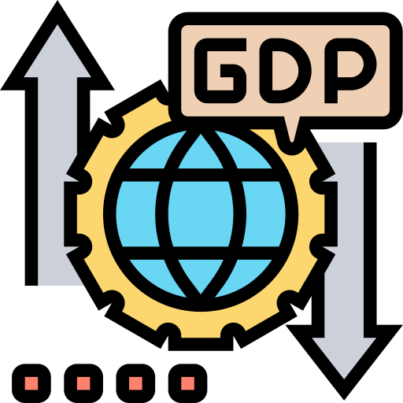

What factors might possibly be related to happiness? Click on the icons to find out!



Rich people are happy!
The bubble plot shows a high correlation between happiness and
GDP. This shows that richer countries tend to be happier compared
to poorer countries.For example, Western Europe is the richest and also happiest region. Aside from European countries, East Asian countries such as Taiwan, Japan and South Korea also have very good economic production.
Corruption is everywhere!
The bubble plot shows a low correlation between happiness and
corruption. No matter how sad or happy a country is, it seems that
corruption is a prevalent phenomena globally. However, there is an interesting pattern showing most Western Europe countries being free from corruption. The biggest surprise would be Rwanda, a very unhappy country who seems to have the least corruption in the world.
Freedom makes us happy!
The bubble plot shows a moderate correlation between happiness and
freedom to make life choices. All countries from Southeast Asia
seem to have very high level of freedom, Cambodia in particular
being the most free Asian country in the world.Afghanistan is not only the unhappiest country, but also the country with least freedom. This may be due to the fact that the extreme military organisation Taliban has taken over the country this year.
You don't have to be happy to be generous!
The bubble plot shows a low correlation between happiness and
generosity. It seems that most countries are quite stingy
regardless of being happy or sad. Interestingly, Central and Eastern European countries seem to be less generous than African countries who are less happier than them. On the other hand, countries with below average happiness such as Indonesia and Myanmar are the most generous in the world.
Happy people live longer!
The bubble plot shows a high correlation between happiness and
healthy life expectancy. All Sub-Saharan African countries have relatively short healthy life expectancy and low happiness score. The only exception is Mauritius which is by far the happiest country from the region with a long healthy life expectancy.
Most Sub-Saharan African countries lack proper social support with the exception of Mauritius, being on par with European countries. This is thanks to social assistance schemes such as universal and free health coverage, free education and various other incentives provided by the country.